A2 액자 출력
선정 & 설치 정리
대기실·복도·진료실에 사용할 A2 세로형 안내물 및 브랜드 이미지를 위한 액자 선택안입니다. 비용, 인상, 설치 조건을 함께 비교합니다.
기본안은 ‘A2 베젤액자’를 추천합니다.
서울이도치과의 인테리어는 원목에 가까운 따뜻한 분위기입니다. 이 공간에는 프레임의 존재감을 더하기보다, 출력물 자체가 자연스럽게 보이는 심플한 베젤액자가 가장 잘 어울립니다. 원목 질감을 해치지 않으면서 안내물과 브랜딩 이미지를 깔끔하게 보여주는 선택입니다.
1순위 · A2 베젤액자
예상 결제금 40,000원 / 장 · 프레임 존재감이 거의 없어 원목 중심의 인테리어와 충돌하지 않습니다. 그래픽이 주인공이 되는 가장 심플한 선택입니다.
대안 · A2 알루미늄 액자
예상 결제금 50,000원 / 장 · 정보성 안내물을 더욱 또렷하게 구분해야 하는 벽면에는 초슬림 실버 또는 블랙 프레임을 적용합니다.
예상 출력 비용
| 제품 | 화면 기준 규격 | 예상 결제금 | 인상 / 적합 공간 | 추천도 |
|---|---|---|---|---|
| 베젤액자 | A2 420 × 594mm 작업 426 × 600mm | 40,000원 | 원목 중심 인테리어와 자연스럽게 어우러짐 · 그래픽 중심 벽면 | 기본 추천 |
| 원목액자 | A2 420 × 594mm | 57,000원 | 따뜻하고 생활감 있는 질감 · 키즈존/편안한 상담 공간 | 공간 한정 |
| 알루미늄 액자 | A2 420 × 594mm | 50,000원 | 슬림하고 정제된 인상 · 정보 안내가 많은 벽면 | 대안 |
| 초슬림아트룩스액자 | 420 × 594mm 급 | 93,000원 | 고급 전시형 마감 · 대표 이미지 1~2점 | 프리미엄 |
| 캔버스액자 | A2 420 × 594mm | 49,000원 | 부드러운 질감 · 풍경/브랜드 무드 이미지 | 이미지 전용 |
제품 리스트
서울이도치과의 원목 중심 인테리어와의 조화를 고려할 때, 기본 액자로는 베젤액자를 제안합니다. 공간별 기능과 연출 목적에 따라 원목·알루미늄·초슬림 아트룩스·캔버스 액자를 선택적으로 적용할 수 있습니다.
베젤액자
프레임리스에 가까운 심플한 인상 · 원목 중심 인테리어 기본안
원목액자
따뜻한 질감 · 상담실 또는 포인트 벽면
알루미늄 액자
정돈된 테두리 · 정보 안내가 많은 벽면
초슬림아트룩스액자
고급 패널형 마감 · 대표 이미지 1~2점
캔버스액자
부드러운 질감 · 풍경 및 브랜드 무드 이미지
원목 액자 레퍼런스 및 색상 선택
원목 액자는 공간에 온기를 더하는 선택지입니다. 서울이도치과에는 밝은 벽면에는 베이지 또는 화이트, 우드·짙은 가구가 있는 포인트 공간에는 월넛을 우선 권장합니다. 의료 정보가 많은 벽면 전체를 원목으로 통일하기보다, 휴식감이 필요한 한두 면에 사용하는 편이 좋습니다.
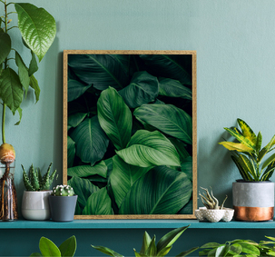
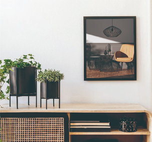
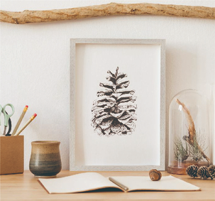
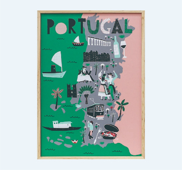
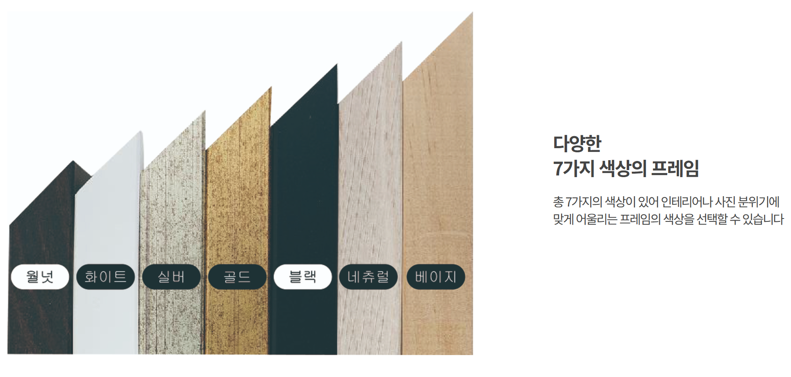
제공된 색상표 기준: 월넛 · 화이트 · 실버 · 골드 · 블랙 · 네추럴 · 베이지. 실제 발주 시 조명 색온도와 벽면 샘플을 함께 확인해 최종 색상을 선택합니다.
알루미늄 액자 레퍼런스 및 색상 선택
알루미늄은 얇고 선명한 테두리로 출력물을 정리해 주는 프레임입니다. 서울이도치과의 기본안은 실버 또는 블랙입니다. 밝은 벽·화이트 사인에는 실버, 우드·그레이 계열 가구가 있는 공간에는 블랙을 적용하면 가장 안정적입니다.
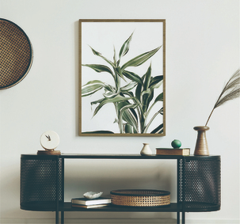
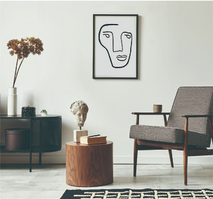
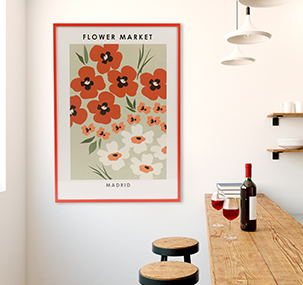
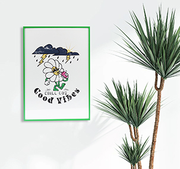
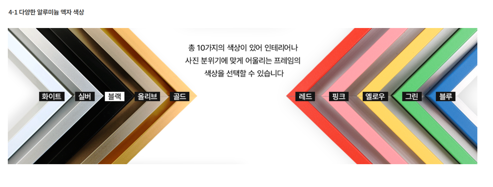
제공된 색상표 기준: 화이트 · 실버 · 블랙 · 올리브 · 골드 · 레드 · 핑크 · 옐로우 · 그린 · 블루. 의료 안내물의 가독성을 유지하려면 기본 안내물은 실버/블랙으로 통일하고, 강한 색상은 시즌성 캠페인에 한정합니다.
베젤액자 레퍼런스 및 거치 방식
베젤액자는 프레임이 거의 드러나지 않아 포스터 자체가 벽면에 바로 놓인 듯한 인상을 줍니다. 여러 장의 캠페인 이미지나 계절별 콘텐츠를 경제적으로 교체할 때 유리하며, A2 대형 규격은 벽걸이용 고리 또는 와이어홀 적용 여부를 확인해야 합니다.
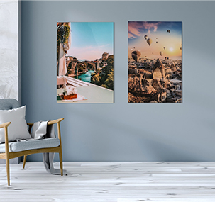
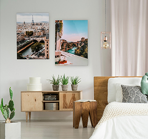
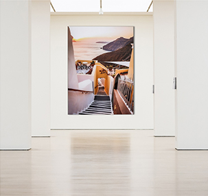
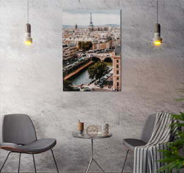
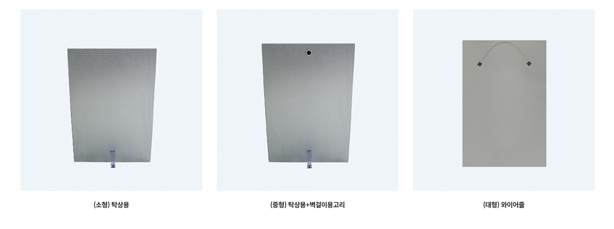
거치 방식: 소형은 탁상용, 중형은 탁상용+벽걸이용 고리, 대형은 와이어홀 방식입니다. A2 대형을 벽에 설치할 수 없는 곳에서는 A3로 축소해 탁상·벽걸이 겸용을 선택하거나, 독립 이젤/스탠드에 배치하는 것을 권장합니다.
초슬림 아트룩스 액자 레퍼런스 및 사양
초슬림 아트룩스는 프레임보다 출력물의 색과 질감이 먼저 보이는 프리미엄 패널형 액자입니다. 단가가 높은 만큼 전 공간에 반복하기보다, 로비·상담실·대표 벽면의 브랜드 이미지 1~2점에 사용하는 것을 권장합니다.
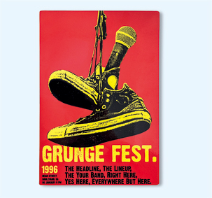
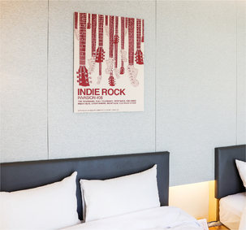
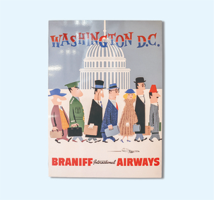
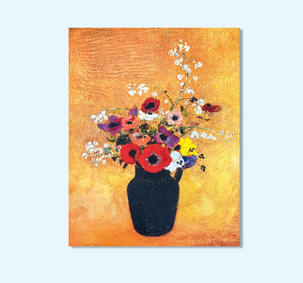
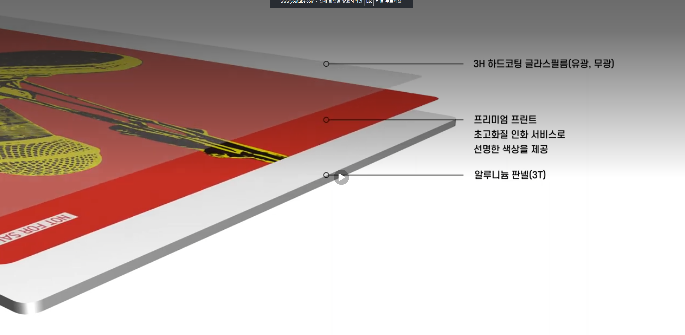
제공 사양 기준: 3H 하드코팅 글라스 필름(유광·무광), 프리미엄 프린트, 3T 알루미늄 패널. 치과 조명 아래에서는 반사를 줄이기 위해 무광을 우선 권장하며, 광택감을 의도적으로 살릴 대표 사진에만 유광을 검토합니다.
캔버스 액자 레퍼런스 및 프레임 두께
캔버스 액자는 인쇄된 이미지에 패브릭 질감을 더해, 사진과 브랜드 무드 이미지를 부드럽고 편안하게 보여줍니다. 안내문보다 대기실·상담실의 분위기를 만드는 아트 이미지에 적합하며, 서울이도치과에서는 포인트 벽면 1~2점 사용을 권장합니다.
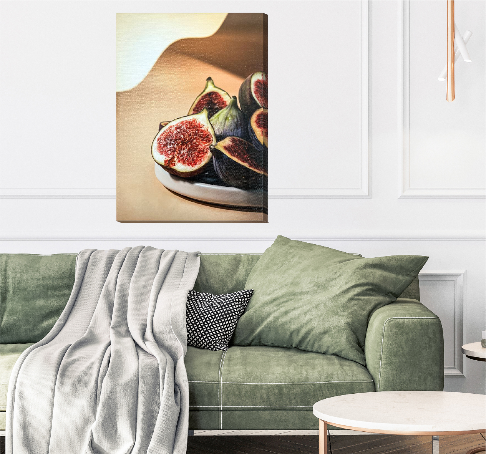
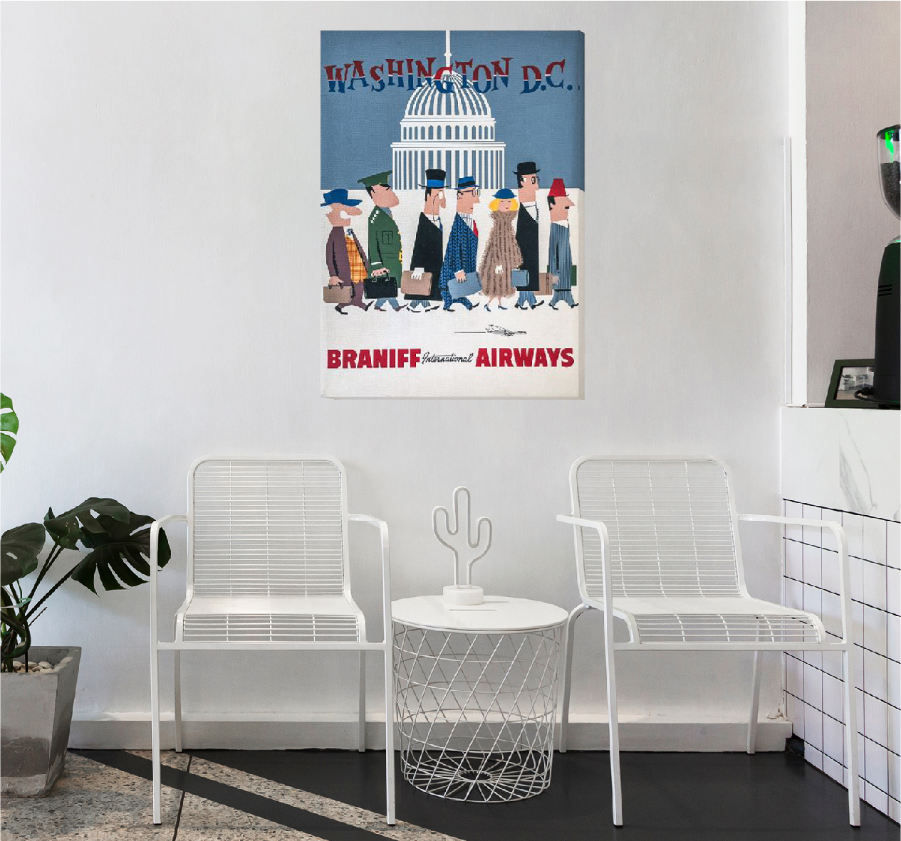
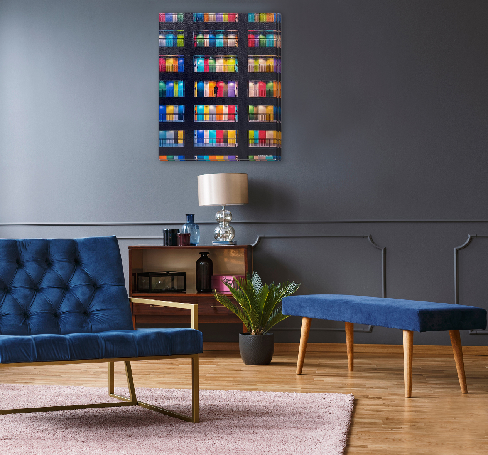
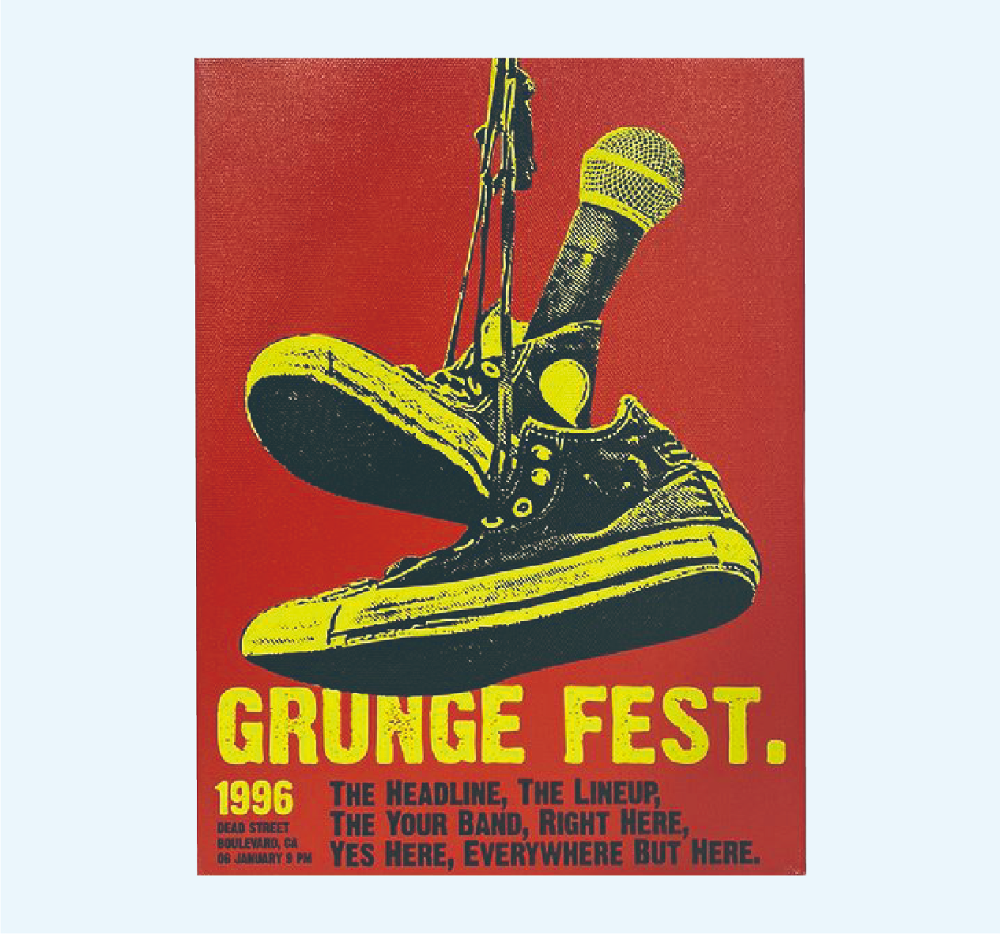
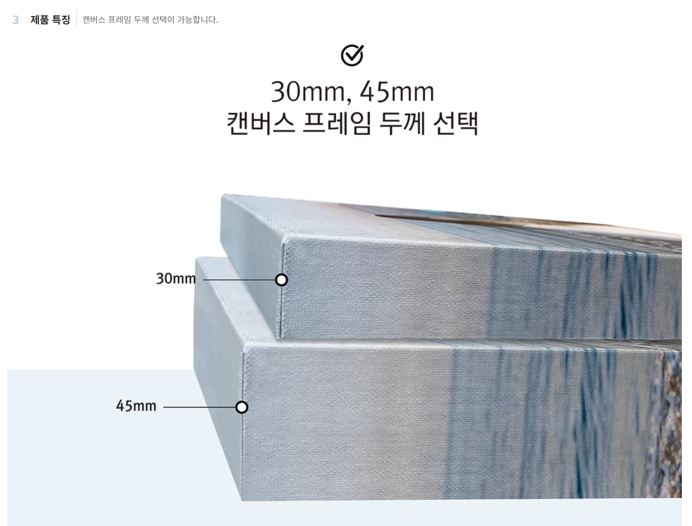
캔버스 프레임은 30mm와 45mm 중 선택할 수 있습니다. 서울이도치과의 A2 포인트 이미지에는 30mm를 기본 권장합니다. 벽면에서 과하게 돌출되지 않아 단정하며, 45mm는 큰 벽면의 존재감을 의도적으로 높일 때 선택합니다.